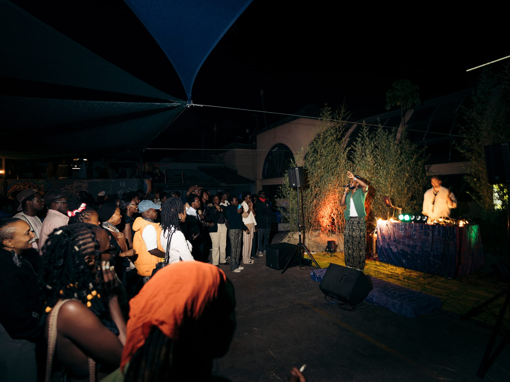
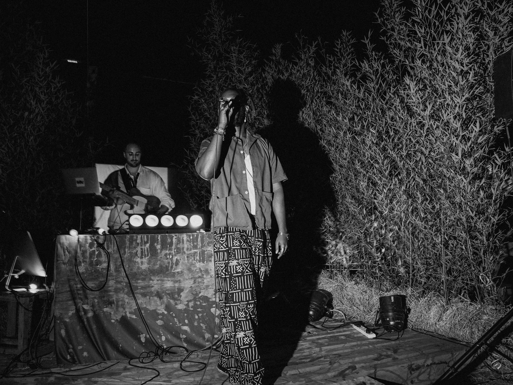

Production & Curation
Pressure Live Listening Party - mau from nowhere, hihi



Produced a live album preview for mau from nowhere and hihi, bringing together a multidisciplinary lineup of live performance and DJs, with supporting acts Rafiiki, Burugu, Gatthoni, and Coco Kahi. The event showcased the collaborative project through a live setting while creating a platform for Nairobi-based artists and DJs to share the programme.
- RoleProducer